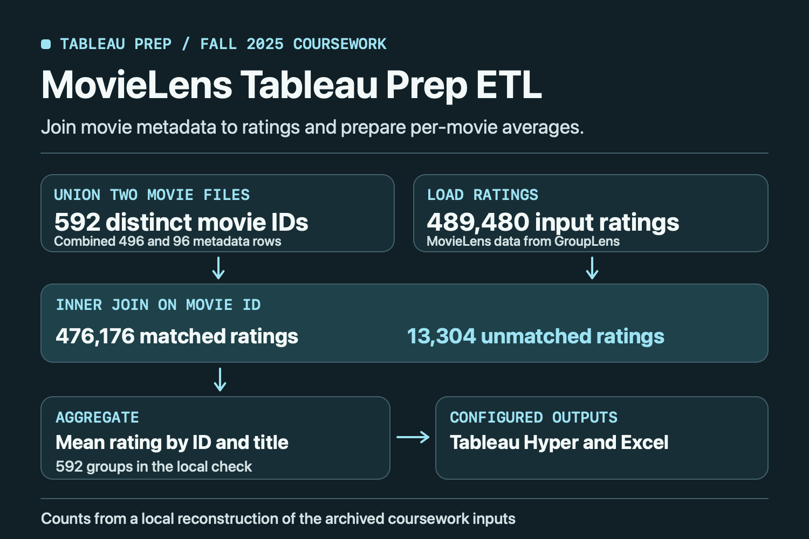

INDIVIDUAL COURSEWORK · Fall 2025 · SEIS 632
MovieLens Tableau Prep ETL
I built a Tableau Prep flow to combine two movie files, join MovieLens ratings by movie ID, and calculate average ratings by movie.

Original coursework
I combined two movie files with 496 and 96 rows, for 592 movie IDs. The flow joined ratings by movie ID, grouped by ID and title, and calculated average ratings. I configured Tableau Hyper and Excel outputs.
Later reconstruction
I reconstructed the inner join from the archived inputs. Of 489,480 rating rows, 476,176 matched and 13,304 were unmatched. The reconstruction produced 592 movie groups. The ratings came from GroupLens MovieLens. The exact release remains unidentified.